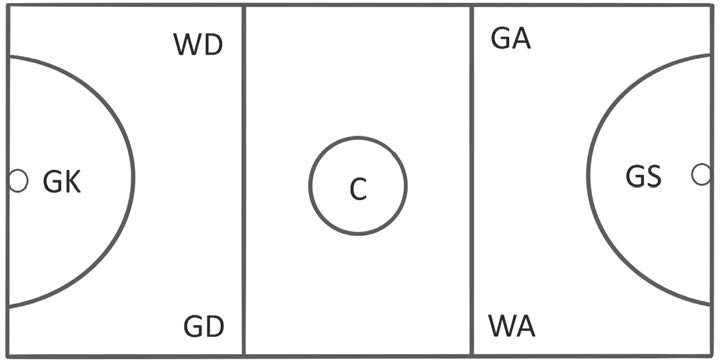

achieve their goals.
This builds friendship and solidarity among players.
(c) It builds discipline and learns to make quick decisions.
Football players learn to follow the rules, respect referees and fellow players, and make quick decisions when they are on the field.
This also helps them in daily life.
(d) It is a job opportunity for players who can play in major competitions.
Talented and motivated players can get the opportunity to play in major national and international leagues, thus finding employment and improving their lives through football.
Netball
Netball is a two-team game played with the aim of scoring goals by passing the ball into the opposing team's net.
A team consists of seven players.
In netball, every player has his or her own playing area.
A player is not allowed to play out of his or her restricted area.
Figure 8 shows the playing positions in netball.

Figure 8: Playing positions in netball
(a)
Goalkeeper (GK):
Is allowed to play in the defensive third and the goal circle.